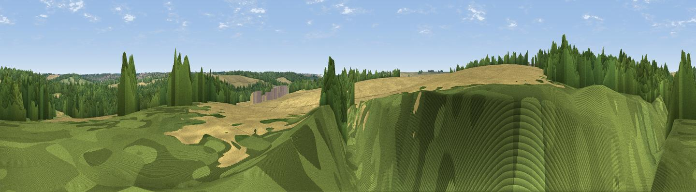

Neville Hill
#45839 in England · top 85% of its area beats it · near Wendens AmboWhere it is
The exact computed spot (TL 51494 37151). Click the marker for map links.
The view, rendered

A 360° render of this exact spot computed from the terrain model, tree cover and land cover — summer colours, afternoon light, calibrated against photographs of famous viewpoints. Real trees, hedges and buildings will differ in detail.
The panorama
Grey silhouette: terrain skyline in each direction (720 bearings, Earth curvature and refraction included). Dashed green: skyline with trees (+15 m) and buildings (+8 m) as obstacles. Blue strip: how far the ground is visible on each bearing.
Where the view opens
Wedge length = distance to the farthest visible ground on that bearing (vegetation-aware). Rings at 10, 25 and 50 km.
What fills the view
60% woodland · 40% cropland
Angular shares of the visible panorama (visual magnitude), not map area. Landscape diversity 0.29 (0–1 Shannon).
Key numbers
More beautiful places nearby
The staircase of upgrades: each row has a higher view potential than everything closer. Driving times are estimates from straight-line distance, calibrated against real road routing — check an actual route before setting out.
| Place | Direction | Drive | Score |
|---|---|---|---|
| Viewpoint near Littlebury | N · 1 km | ~3 min | 26.0 |
| Heavy Hill | NNW · 4 km | ~9 min | 29.2 |
| Viewpoint near Ickleton | NNW · 5 km | ~12 min | 33.0 |
| Pepperton Hill | NW · 8 km | ~16 min | 44.0 |
| Viewpoint near Heydon | WNW · 9 km | ~18 min | 50.0 |
| Viewpoint near Stapleford | N · 16 km | ~28 min | 54.8 |
| Viewpoint near Royston | WNW · 18 km | ~30 min | 56.6 |
| Viewpoint near Hexton | W · 40 km | ~59 min | 65.4 |
52.01211, 0.20599 · source: osm peak · position refined by local search. Computed location — check access rights before visiting.